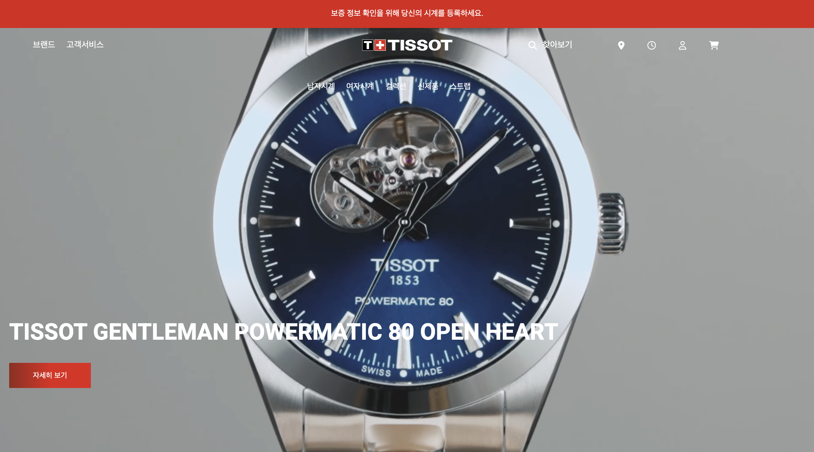

함께일할 웹 퍼블리셔를
찾고 계신가요?
그렇다면 제가 딱
어울릴 것 같아요!
간결하고 깔끔한 마크업을 하기위해 노력하며, 웹표준과 웹접근성을 준수합니다.
선택자를 자유자제로 사용가능하며, 좋은 스타일가이드를 만들기 위해 노력합니다.
적절한 메소드와 css스타일을 결합한 코딩을 하며 플러그인 사용, 수정이 가능합니다.
UI/UX를 이해하며 인터페이스 뿐만 아니라 이용하는 페이지의 사용자의 느낌, 만족감 등까지 고려해서 디자인 가능합니다.
Photoshop, Illustrator, Xd 툴 사용 가능합니다.
WORKS.